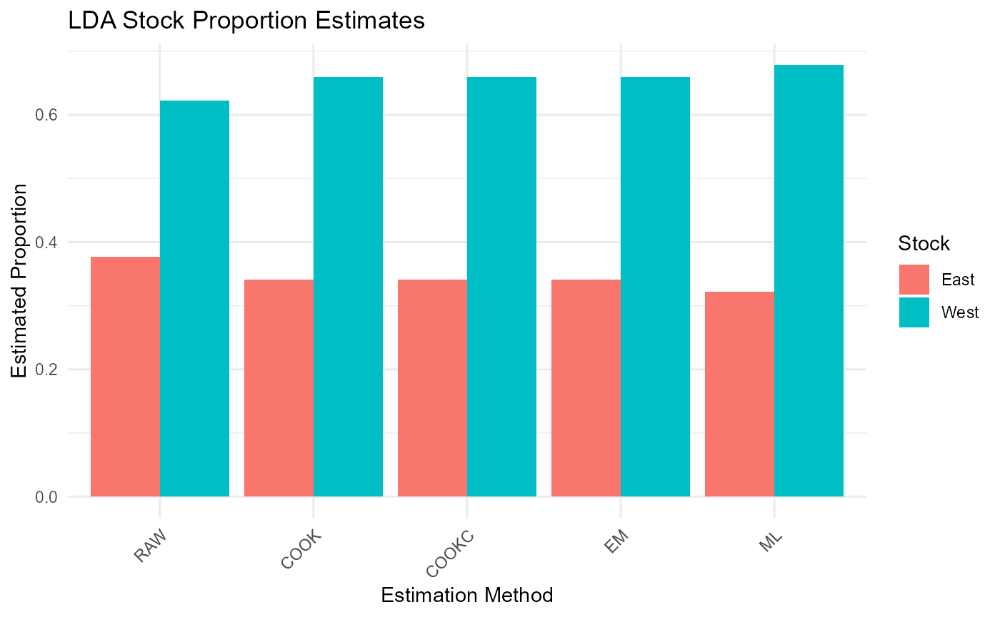
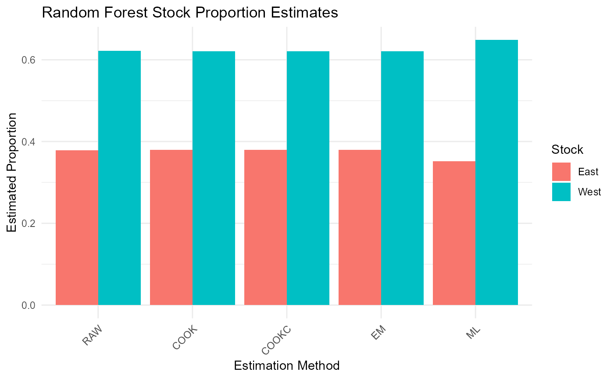
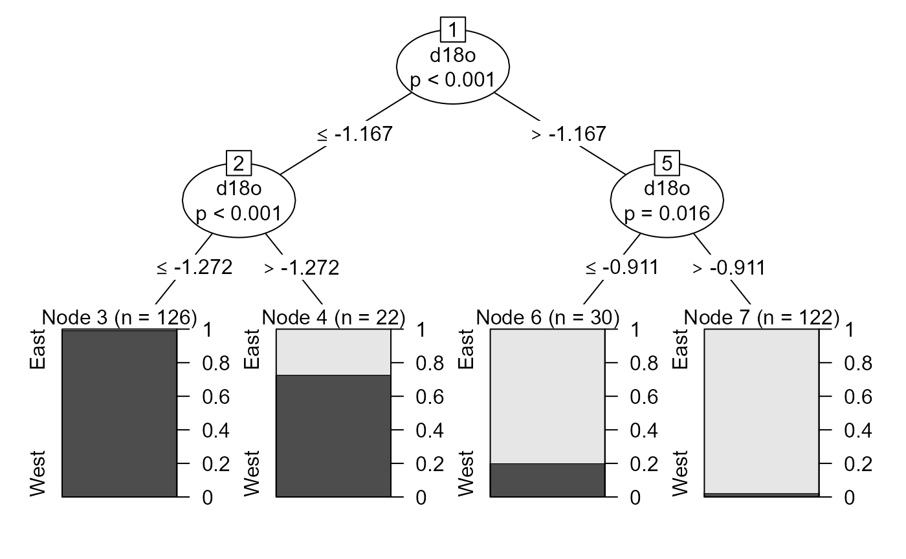
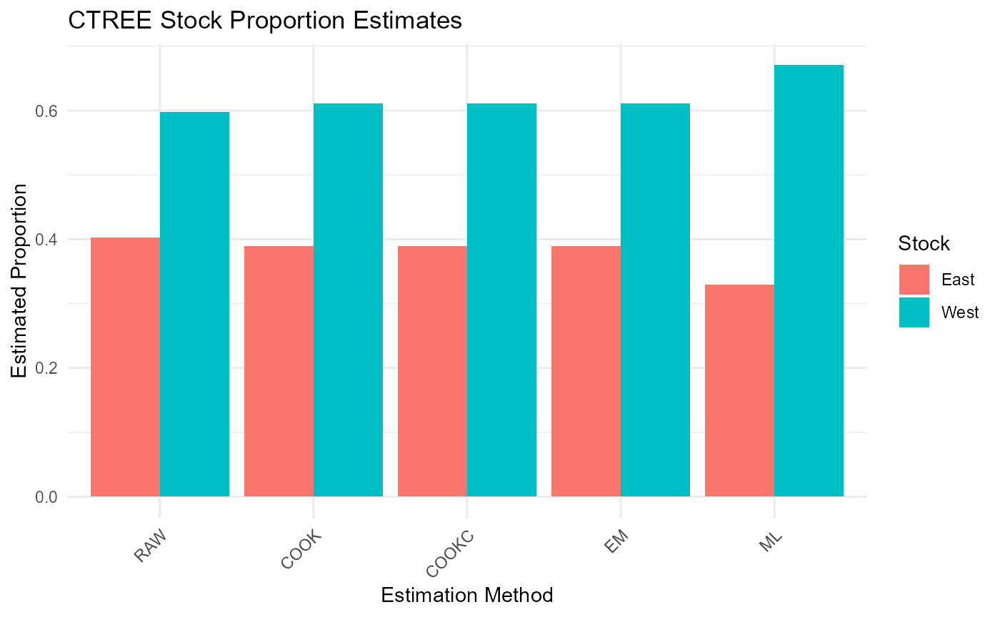

Applying HISEA estimators to custom classification models with run_hisea_estimates
Sosthene Akia
Fisheries and Oceans Canadasosthene.akia@dfo-mpo.ca
Alex Hanke
Fisheries and Oceans Canadaalex.hanke@dfo-mpo.ca
2025-08-19
Source:vignettes/Custom_Classification_Models.Rmd
Custom_Classification_Models.RmdIntroduction
The run_hisea_estimates() function is a core component
of the RHISEA package that allows users to
build their own classification models and seamlessly
integrate these results into the classical mixed-stock analysis
framework originally implemented by the HISEA program.
HISEA is widely used to estimate the proportions of different source populations (stocks) within a mixed sample based on known baseline data. It does so by combining classification outputs with sophisticated estimators and bootstrap procedures to provide robust stock composition estimates along with measures of uncertainty.
Purpose of run_hisea_estimates()
This function facilitates the application of any classification algorithm that outputs:
- Pseudo-class assignments for each mixture sample (i.e., predicted class labels),
- Class likelihoods or posterior probabilities for each mixture sample (probability of belonging to each stock),
- The confusion matrix or phi matrix derived from cross-validation on the baseline data, representing classification accuracy and error rates.
By accepting these key inputs, run_hisea_estimates()
replicates the five classical HISEA estimators:
From Raw estimator (based directly on pseudo-classes) to ML estimator.
This allows users to combine modern or custom classifiers with the trusted HISEA estimation framework, obtaining stock proportion estimates and associated confidence measures that are directly comparable to the original HISEA output.
What you need to provide
To use run_hisea_estimates(), you need to supply the
following:
-
pseudo_classes: An integer vector of predicted classes (one per mixture individual), as produced by your classifier. -
likelihoods: A numeric matrix of posterior probabilities or class likelihoods for each mixture individual across all stocks (columns correspond to stocks). -
phi_matrix: The phi matrix (classification error matrix) computed from cross-validation on your baseline data. This matrix captures how often each stock is classified as each other stock, accounting for misclassification rates. -
np: Number of populations or stocks in your baseline data. -
stocks_names: Character vector naming each stock in order. -
type: Estimation type, typically"BOOTSTRAP"for bootstrap confidence intervals or"ANALYSIS". - Additional arguments for output control, such as
export_csvandoutput_dir.
How it works internally
The function uses the provided pseudo-classes and likelihoods as inputs to the five estimators implemented in HISEA, incorporating the phi matrix to adjust for classification uncertainty and errors. It runs bootstrap replicates to compute confidence intervals and standard deviations for the estimated stock proportions, enabling statistically sound inference.
1. Linear Discriminant Analysis (LDA)
We start with a classical parametric classifier, LDA, to illustrate the workflow.
# Load required packages
library(MASS)
library(caret)
library(reshape2)
library(ggplot2)
library(RHISEA)
# Load baseline and mixture data
baseline_file <- system.file("extdata", "baseline.rda", package = "RHISEA")
mixture_file <- system.file("extdata", "mixture.rda", package = "RHISEA")
load(baseline_file) # loads `baseline` data.frame
load(mixture_file) # loads `mixture` data.frame
# Prepare baseline data
baseline$population <- as.factor(baseline$population)
stocks_names <- levels(baseline$population)
np <- length(stocks_names)
# Define formula for classification
formula <- population ~ d13c + d18o
# Function to perform stratified k-fold CV and compute phi matrix for LDA
get_cv_results_lda <- function(data, formula, k = 10) {
set.seed(123)
folds <- createFolds(data$population, k = k, list = TRUE)
all_predictions <- factor(rep(NA, nrow(data)), levels = levels(data$population))
all_probabilities <- matrix(NA, nrow = nrow(data), ncol = length(levels(data$population)),
dimnames = list(NULL, levels(data$population)))
for(i in seq_along(folds)) {
test_idx <- folds[[i]]
train_data <- data[-test_idx, ]
test_data <- data[test_idx, ]
model <- lda(formula, data = train_data)
pred <- predict(model, test_data)
all_predictions[test_idx] <- pred$class
all_probabilities[test_idx, ] <- pred$posterior
}
conf_matrix <- table(Predicted = all_predictions, Actual = data$population)
phi_matrix <- prop.table(conf_matrix, margin = 2)
list(confusion_matrix = conf_matrix,
phi_matrix = phi_matrix,
predictions = all_predictions,
probabilities = all_probabilities)
}
# Run CV and get phi matrix
lda_cv <- get_cv_results_lda(baseline, formula)
# Train full LDA model on baseline
lda_model <- lda(formula, data = baseline)
# Prepare mixture data for prediction
mix_data_prepared <- data.frame(
d13c = as.numeric(as.character(mixture$d13c_ukn)),
d18o = as.numeric(as.character(mixture$d18o_ukn))
)
# Predict classes and posterior probabilities for mixture
lda_pred <- predict(lda_model, mix_data_prepared)
lda_classes <- as.integer(lda_pred$class)
lda_probs <- lda_pred$posterior
# Convert phi matrix to numeric matrix if needed
phi_matrix_numeric <- as.matrix(lda_cv$phi_matrix)
phi_matrix_numeric <- matrix(as.numeric(phi_matrix_numeric), nrow = nrow(phi_matrix_numeric), ncol = ncol(phi_matrix_numeric))
# Run HISEA estimates with LDA results
lda_results <- run_hisea_estimates(
pseudo_classes = lda_classes,
likelihoods = lda_probs,
phi_matrix = phi_matrix_numeric,
np = np,
type = "BOOTSTRAP",
stocks_names = stocks_names,
export_csv = TRUE,
output_dir = "results_lda",
verbose = FALSE
)
# Display results
cat("\nLDA Results - Mean Estimates:\n")##
## LDA Results - Mean Estimates:
print(lda_results$mean_estimates)## RAW COOK COOKC EM ML
## East 0.3774489 0.3405903 0.3405903 0.3405905 0.3221202
## West 0.6225511 0.6594097 0.6594097 0.6594095 0.6778798
cat("\nLDA Results - Standard Deviations:\n")##
## LDA Results - Standard Deviations:
print(lda_results$sd_estimates)## RAW COOK COOKC EM ML
## East 0.007156959 0.008194992 0.008194992 0.008194945 0.008626433
## West 0.007156959 0.008194992 0.008194992 0.008194945 0.008626433
# Visualization of results
results_long <- melt(lda_results$mean_estimates)
colnames(results_long) <- c("Stock", "Method", "Proportion")
ggplot(results_long, aes(x = Method, y = Proportion, fill = Stock)) +
geom_bar(stat = "identity", position = "dodge") +
theme_minimal() +
labs(title = "LDA Stock Proportion Estimates",
y = "Estimated Proportion",
x = "Estimation Method") +
theme(axis.text.x = element_text(angle = 45, hjust = 1))
2. Random Forest (RF)
Next, we apply Random Forest, a powerful ensemble learning method.
library(randomForest)
# Function to perform stratified k-fold CV and compute phi matrix for RF
get_cv_results_rf <- function(data, formula, k = 10, ntree = 500) {
set.seed(123)
folds <- createFolds(data$population, k = k, list = TRUE)
all_predictions <- factor(rep(NA, nrow(data)), levels = levels(data$population))
all_probabilities <- matrix(NA, nrow = nrow(data), ncol = length(levels(data$population)),
dimnames = list(NULL, levels(data$population)))
for(i in seq_along(folds)) {
test_idx <- folds[[i]]
train_data <- data[-test_idx, ]
test_data <- data[test_idx, ]
model <- randomForest(formula, data = train_data, ntree = ntree)
all_predictions[test_idx] <- predict(model, test_data)
all_probabilities[test_idx, ] <- predict(model, test_data, type = "prob")
}
conf_matrix <- table(Predicted = all_predictions, Actual = data$population)
phi_matrix <- prop.table(conf_matrix, margin = 2)
list(confusion_matrix = conf_matrix,
phi_matrix = phi_matrix,
predictions = all_predictions,
probabilities = all_probabilities)
}
# Run CV and get phi matrix
rf_cv <- get_cv_results_rf(baseline, formula, ntree = 500)
# Train full RF model on baseline
rf_model <- randomForest(formula, data = baseline, ntree = 500)
# Predict classes and posterior probabilities for mixture
rf_probs <- predict(rf_model, mix_data_prepared, type = "prob")
rf_classes <- as.integer(predict(rf_model, mix_data_prepared))
# Run HISEA estimates with RF results
rf_results <- run_hisea_estimates(
pseudo_classes = rf_classes,
likelihoods = rf_probs,
phi_matrix = rf_cv$phi_matrix,
np = np,
type = "BOOTSTRAP",
stocks_names = stocks_names,
export_csv = TRUE,
output_dir = "results_rf",
verbose = FALSE
)
# Display results
cat("\nRandom Forest Results - Mean Estimates:\n")##
## Random Forest Results - Mean Estimates:
print(rf_results$mean_estimates)## RAW COOK COOKC EM ML
## East 0.3783069 0.3794679 0.3794679 0.3794679 0.3518484
## West 0.6216931 0.6205321 0.6205321 0.6205321 0.6481516
cat("\nRandom Forest Results - Standard Deviations:\n")##
## Random Forest Results - Standard Deviations:
print(rf_results$sd_estimates)## RAW COOK COOKC EM ML
## East 0.007135641 0.007700332 0.007700332 0.007700327 0.008733984
## West 0.007135641 0.007700332 0.007700332 0.007700327 0.008733984
# Visualization of results
results_long <- melt(rf_results$mean_estimates)
colnames(results_long) <- c("Stock", "Method", "Proportion")
ggplot(results_long, aes(x = Method, y = Proportion, fill = Stock)) +
geom_bar(stat = "identity", position = "dodge") +
theme_minimal() +
labs(title = "Random Forest Stock Proportion Estimates",
y = "Estimated Proportion",
x = "Estimation Method") +
theme(axis.text.x = element_text(angle = 45, hjust = 1))
3. Conditional Inference Tree (CTREE)
Finally, we demonstrate a non-parametric tree method based on permutation tests.
library(party)
# Function to perform stratified k-fold CV and compute phi matrix for CTREE
get_cv_results_ctree <- function(data, formula, k = 10) {
set.seed(123)
folds <- createFolds(data$population, k = k, list = TRUE)
all_predictions <- factor(rep(NA, nrow(data)), levels = levels(data$population))
all_probabilities <- matrix(NA, nrow = nrow(data), ncol = length(levels(data$population)),
dimnames = list(NULL, levels(data$population)))
for(i in seq_along(folds)) {
test_idx <- folds[[i]]
train_data <- data[-test_idx, ]
test_data <- data[test_idx, ]
model <- ctree(formula, data = train_data)
pred_probs <- predict(model, test_data, type = "prob")
pred_probs_matrix <- do.call(rbind, pred_probs)
all_predictions[test_idx] <- predict(model, test_data)
all_probabilities[test_idx, ] <- pred_probs_matrix
}
conf_matrix <- table(Predicted = all_predictions, Actual = data$population)
phi_matrix <- prop.table(conf_matrix, margin = 2)
list(confusion_matrix = conf_matrix,
phi_matrix = phi_matrix,
predictions = all_predictions,
probabilities = all_probabilities)
}
# Run CV and get phi matrix
ctree_cv <- get_cv_results_ctree(baseline, formula)
# Train full CTREE model on baseline
ctree_model <- ctree(formula, data = baseline,
controls = ctree_control(mincriterion = 0.95,
minsplit = 20,
minbucket = 7))
# Predict classes and posterior probabilities for mixture
ctree_probs <- predict(ctree_model, mix_data_prepared, type = "prob")
ctree_probs_matrix <- do.call(rbind, ctree_probs)
ctree_classes <- as.integer(predict(ctree_model, mix_data_prepared))
# Run HISEA estimates with CTREE results
ctree_results <- run_hisea_estimates(
pseudo_classes = ctree_classes,
likelihoods = ctree_probs_matrix,
phi_matrix = ctree_cv$phi_matrix,
np = np,
type = "BOOTSTRAP",
stocks_names = stocks_names,
export_csv = TRUE,
output_dir = "results_ctree",
verbose = FALSE
)
# Display results
cat("\nCTREE Results - Mean Estimates:\n")##
## CTREE Results - Mean Estimates:
print(ctree_results$mean_estimates)## RAW COOK COOKC EM ML
## East 0.4027002 0.3894321 0.3894321 0.3894321 0.3295694
## West 0.5972998 0.6105679 0.6105679 0.6105679 0.6704306
cat("\nCTREE Results - Standard Deviations:\n")##
## CTREE Results - Standard Deviations:
print(ctree_results$sd_estimates)## RAW COOK COOKC EM ML
## East 0.0073643 0.008368522 0.008368522 0.008368519 0.008819052
## West 0.0073643 0.008368522 0.008368522 0.008368519 0.008819052
# Visualize tree and results
plot(ctree_model)
results_long <- melt(ctree_results$mean_estimates)
colnames(results_long) <- c("Stock", "Method", "Proportion")
ggplot(results_long, aes(x = Method, y = Proportion, fill = Stock)) +
geom_bar(stat = "identity", position = "dodge") +
theme_minimal() +
labs(title = "CTREE Stock Proportion Estimates",
y = "Estimated Proportion",
x = "Estimation Method") +
theme(axis.text.x = element_text(angle = 45, hjust = 1))
Conclusion
This vignette demonstrated how to:
- Prepare baseline and mixture data,
- Perform stratified cross-validation to estimate classification accuracy (phi matrix),
- Train various classifiers (LDA, RF, CTREE),
- Predict mixture sample classes and posterior probabilities,
- Run
run_hisea_estimates()to get robust mixed-stock proportion estimates with confidence intervals, - Visualize and interpret the results.
You can extend this approach to any classification method that provides pseudo-classes and posterior probabilities, leveraging the classical HISEA framework within the RHISEA package.